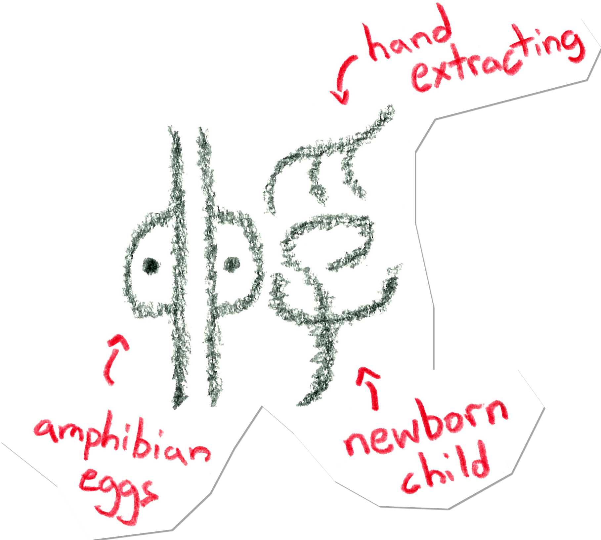

孵 falls outside the "general use" set of kanji and is commonly replaced with hiragana. For example, you may see "incubation" from the vocabulary list writtien as 「ふ化」 in newspapers and TV captions.

Above is an assembled seal script form of 孵.
The left is egg(卵), a character thought to be based on frog eggs. The right side is a combination of a hand and a child. Together, it represents outside influence on the incubation and birthing process.